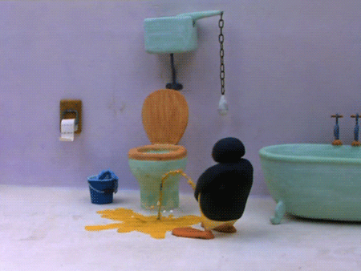

我在飞机上出乎意料地点了杯可乐。可能是看到可乐瓶突然想起来浪浪的缘故。
我想着以后可以另起一页贴上来，所以开始了第二页。以后可能也不会经常有感而发了吧，可能没有闲情找一大段空白时间安安静静地写写字吧。
或许是看了他又在空间发的小文章，或许不是。
可能早就需要这样一块时间来面对自己，面对内心的情绪，可能在年初坐飞机就是命中注定让我想通并改正吧。
或许人生本来就想不通。
之前在知乎上翻到一个在泰国禅修的人说，人一安静下来，打坐时反而会变得情绪化、狂躁。因为那时直面面对自己的内心，和自己对话，打交道。当没有东西抑制情绪，或者是个体的自我保护机制被卸下时，便能见到真实的自己。
我把夜深人静的惆怅，暂且是当作同样的原理吧。
可能是不够强大，没有足够丰富的内心世界，学识，经历去支持。
先上个厕所….
上厕所回来了，上一个用厕所的中年男把尿洒得坐垫上全是，真恶心。或许也可能是冲水时溅出来的吧，就像是你进了一间已满是粪便味道的厕所，出来时和即将要进去的老妇人打了个照面，而等人已推门进去，察觉了那气味，你才想起对方会不会误会是你自己所为。你刚想要解释一番，可人早已进去了，说不定已在心里问候的你十八辈祖宗。其实即使那老妇人还未进去，你可能也只会想：“算了吧，哪有人会说这些。”
你又想到这又好像是你痛快地解了个大号出来，而同行的朋友却立马说她也要上厕所，此时你的表情满是日了狗了怎么这么巧不巧的，边掩饰着尴尬，心里祈祷着那可怕的气味早已散去，实则怎么可能，那东西的杀伤力可是很厉害的，没有排气扇可是要持续一小时之久。朋友已经进去，此时你懊悔地想着当时为何不说：“哇，你可得小心，这厕所可真臭，我进去时就已经那样了。”来掩饰自己所干的一切。所以你又想，当那位老妇人进去时，那样的解释便变得有点此地无银三百两的感觉。可即使是你干的又怎样呢，谁又不大号呢？仙女也大号啊。
尿意打断了你的思绪，坐垫上喷射形的水珠把你拉回了现实。“可能是冤枉他了”，你那样得想着，边抽着纸抹去水迹，那近似透明、无气味的水珠让你更是那样想了。但似干未干的擦痕还是让你因为那恶心的可能性，抽了更多的纸垫了个瓷实。你小解完毕，摁下了冲水键。
那干燥的坐垫便暴露了一切，你又想到那中年男子的嘴脸。
真是恶心。
抬起头，这厕所原来还有多面镜，你看了看被灯光修饰了的自己，嗯，还不错，长得。
右侧的镜子可以看见后脑勺，你瞧了瞧今天刻意盘的随意的头发，真是慵懒又不失情调呢，满意。你调整了下角度，侧脸便显露了出来。真是难看，上嘴唇都快和鼻头成一条线了，额头也是奇怪的扁弧状，扁平的脸颊使得凹凸不平且发红的鼻翼更加明显了…嘴突得仿佛一直不高兴的撅着一般，需不需要整牙啊….诶，难怪一直没有桃花。
喂，照的3有点久了吧，这飞机上的厕所有没有摄像头啊….没人等也得出去了吧。
你摁了摁水龙头，象征性地冲了冲半边手，往毛呢大衣上蹭来蹭半湿的手，“洗干净了又得涂护手霜了，真麻烦”，你这样想着边推开了门。啊，没人等啊。
在和明亮的厕所有所不同的舱内昏暗的灯光下，你又想起了那中年男子的嘴脸，
真是恶心。
☁